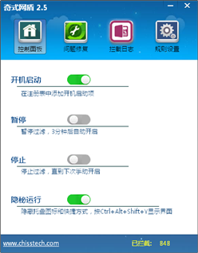
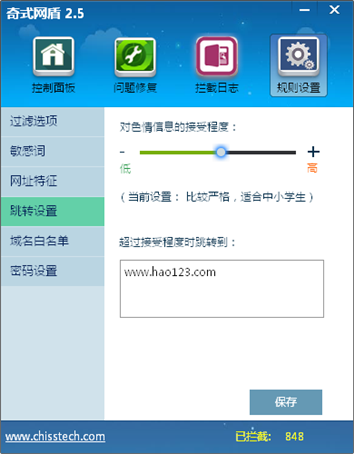
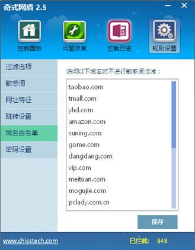
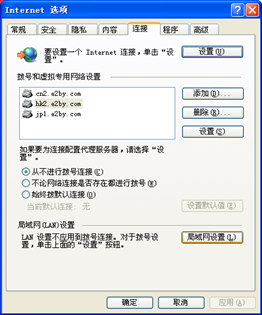
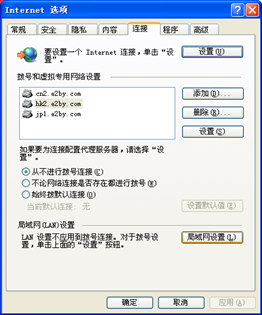

奇式网盾安装说明
测试版是基于官网上2.5版本，去掉了https搜索结果跳转功能的版本
因此 ，还不是商业版本的界面，与ppt上有些区别，主要是美工上的
如果用户对过滤的要求比较严格，可以接受屏蔽https的搜索，可以安装官网上的2.5版本，否则就用单独发的这个 奇式网盾-医院-测试版.zip
2.5版本的更新说明是这样的；
1. 增加了密码防护功能
2. 加了进程锁，没有密码很难退出软件
3. 增加了对360极速等浏览器的支持
4. 为了更彻底的杜绝黄源，屏蔽了百度、搜狗、好搜等搜素引擎的加密（https）方式的搜索结果 您将只能使用不加密的搜索引擎，如bing、浏览器右上角的搜索工具中的sogou，或者2345导航页中的baidu ，解决方案
1：使用QQ浏览器，猎豹、UC、2345、火狐也可以 解决方案
2：搜索出现错误时，将地址栏的 https:// 中的“s”去掉 解决方案
3：将主页设为 http://www.2345.com/?30519 ,使用其中的baidu搜索，这样也很方便
总结：这个版本适用于要求严格的用户
最近360好像受了刺激，新软件很难进入360白名单了，而且很多以前已经进入白名单的软件也被拉黑，因此安装奇式网盾最大的问题是360会阻拦，类似下图的报警在安装过程中会出现多次，一定要选择“允许程序左右操作”!:
因此，建议给客户安装腾讯电脑关键，而不是360


1. 浏览器地址栏输入 hao2.me/showports
应该显示
port0:20158,port1:0,port2:0,port3:0,port4:0,port5:0
而不是提示没有正确设置
2. 打开网易看看，应该有很多缺口，bobo直播什么的，都没有了
然后通过托盘图标或者快捷键Ctrl+Alt+Shift+Y 打开设置界面，右下角的已拦截数字应该不是0了，过滤日志也有内容了


将软件的图标藏起来，让用户意识不到软件在运行，需要调出界面，可以通过快捷键打开
快捷键： Ctrl+Alt+Shift+Y

不良信息过滤，必须开的， 其他可选
反跟踪、屏蔽恶意域名、屏蔽广告，用的都是adblock plus的数据库，有专人维护，不过前两者更新频率比较低

主要用于
1. 添加敏感词
用户认为需要屏蔽，但系统敏感词中没有的


2. 取消屏蔽某个词
用户认为某个词不需要屏蔽，但是系统敏感词中有这个词，那就在这里加个敏感词

注意事项：
Ø 敏感词中不要有标点符号，尤其是 破折号、分号
Ø 2.5及以下版本不支持字母开头，只支持汉字开头
Ø 查看按钮，可以打开保存敏感词的文本，可以用于删除设置的敏感词，但是尽量不要在记事本中手动添加敏感词，以免格式不对不能认
基于ADBlock Plus语法，这个语法的教程在这里 https://adblockplus.org/zh_CN/filters 这个官方教程并不全面，一般人是不会直接用这个语法的，因此，一般来说只是用来添加某个域名进入黑名单，或者白名单
加入哪个名单，取决于“列入白名单”那个选项

注意事项：
Ø https的不支持
Ø “http://” “http://www." 这两个个前缀可要可不要
Ø 可以点查看看以前添加的规则，删除可以，尽量不要在记事本中手动修改，以免语法错误
Ø 如果遇到需要屏蔽的网页，这里可以设置跳转到哪里去，不设置就跳转到默认网页
Ø 如果需要显示警告文字，编辑默认网页的内容即可
Ø 对色情信息的接受程度，越低越敏感，越容易跳转

这里的域名，不进行敏感词过滤，比如去淘宝、京东买东西，会搜到黑丝什么的，这里加了淘宝、京东的域名，买东西的时候就不会看不到敏感的东西了
注意事项：
Ø 尽量不要删除这里的域名，尤其是不认识的域名
Ø 最多支持200个域名白名单

用于简单防护用户对设置的修改
Ø 旧密码 、新密码、确认新密码，很常见的设置方式，无须赘述
Ø “使用随机密码”，请慎用，所谓“随机密码”，是指由管理员设置，存在服务器上的密码，必须问管理员才知道密码，输入密码后软件会和服务器上的密码进行比对，因此没有网络的时候也不能登录

因为有进程防护，避免用户随便关闭进程，所以卸载有点麻烦，需要
1. 取消开机启动
2. 取消密码设置 - 不勾选随机密码 并且自己设置的密码为空
3. 重启电脑
然后才可以卸载
如果卸载后不能上网，就是ie代理设置没有被清除造成的
打开ie， 工具 -> Internet选项 -> 连接 -> 局域网设置 -> 代理服务器
把 为LAN使用代理服务器 取消掉就可以了
 
